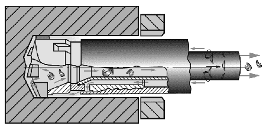

Глубокое сверление
Отверстия считаются глубокими, если их длина превышает диаметр в пять и более раз. Такие
отверстия довольно часто встречаются в тяжёлом машиностроении: в роторах, колоннах, различных
валах, трубах и т.д.
Глубокие отверстия отличаются большим разнообразием:
1. По конструкции – сквозные, глухие, ступенчатые, весьма длинные.
2. По точности и чистоте поверхности и прямолинейности оси.
3. По расположению – центральные и смещённые.
Это разнообразие является причиной значительного количества различных процессов получения
глубоких отверстий. Специфичность этих процессов усугубляется различными положениями в
маршруте операций термической обработки.
В данное время для сверления глубоких отверстий в основном используются следующие системы
глубокого сверления:

Эжекторная система (2-х штанговая):
- Не требует уплотнения между обрабатываемой деталью и кондукторной втулкой.
- Легко встраивается в существующее оборудование.
- Рекомендуется при обработке деталей, с которыми возникают проблемы герметизации.
Одноштанговая система (STS):
-
Для материалов с усложненным стружкообразованием таких, как нержавеющие и низколегированные
стали.
- Отличается стабильностью работы и высокой долговечностью всех элементов.
- Необходим специализированный станок глубокого сверления.
- Рекомендуется для больших партий деталей.
Сверление пушечными (ружейными) сверлами:
- Небольшой диаметр отверстия.
-
Может выполняться на обрабатывающих центрах при наличие предварительно засверленного
отверстия для направления.
- Требует подачи СОЖ под высоким давлением.
Термообработка для улучшения обрабатываемости резанием
Обрабатываемость резанием характеризуется производительностью резания, усилием резания,
качеством полученной поверхности, стойкостью инструмента, видом образующейся стружки и
зависит от свойств и структуры обрабатываемого материала. Обычно обрабатываемость оценивают
по твердости стали, но этого не достаточно, т.к. обрабатываемость существенно зависит от
структуры и субструктуры. Поэтому режимы предварительной термообработки назначают исходя из
состава стали и условий резания ...
подробнее